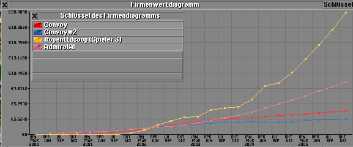

Merge with trunk of NoAI branch
Fellow coopers,
great news, another big step forward in OpenTTD development: the new framework for computer players has been merged from the NoAI branch into trunk. So, from now on, there’s no need anymore to complain about those stupid AI which OpenTTD had up until now – everyone may programme his or her own AI with as much intelligence as desired. Like many people did as documented in the NoAI subforums. Check out the threads there for different AIs.

Company chart from our first coop game against a few AIs
I got curious when the number and frequency of commits started to increase significantly that afternoon, starting with r15000:
[11:48] <cia -1> OpenTTD: truebrain * r15000 /branches/noai/src/ (ai/ai.hpp saveload/ai_sl.cpp): [NoAI] -Fix (r14984): forgot to rename @file too
[14:51] <cia -1> OpenTTD: truebrain * r15001 /branches/noai/src/ai/ai_core.cpp: [NoAI] -Fix: make NoAI network safe again
hmm… making it network safe again? Let’s see…
a number of other commits followed, also and especially in th NoAI branch. Then then finally what seemed to become more and more inevitable:
[18:12] <cia -1> OpenTTD: truebrain * r15027 /trunk/ (311 files in 30 dirs): (log message trimmed)
[18:12] <cia -1> OpenTTD: -Merge: tomatos and bananas left to be, here is NoAI for all to see.
[18:12] <cia -1> OpenTTD: NoAI is an API (a framework) to build your own AIs in. See:
[18:12] <cia -1> OpenTTD: http://wiki.openttd.org/wiki/index.php/AI:Main_Page
[18:12] <cia -1> OpenTTD: With many thanks to:
[18:12] <cia -1> OpenTTD: – glx and Rubidium for their syncing, feedback and hard work
[18:12] <cia -1> OpenTTD: – Yexo for his feedback, patches, and AIs which tested the system very deep
[18:12] <cia -1> OpenTTD: – Morloth for his feedback and patches
[18:12] <cia -1> OpenTTD: – TJIP for hosting a challenge which kept NoAI on track
[18:12] <cia -1> OpenTTD: – All AI authors for testing our AI API, and all other people who helped in one way or another
[18:12] <cia -1> OpenTTD: -Remove: all old AIs and their cheats/hacks
I can only support this: many thanks to all who made this big step in the history of OpenTTD possible. Great job, guys!
So now let’s look forward to maybe an occasional coopetition game of us coopers against the best of AIs – it will definitely require a slightly different approach than in our usual games w/o any competition 🙂 as we tried out some time ago in a match against AdmiralAI.
PS: Maybe there’re some further nice fruit in the basket in the not so distant future:
[13:09] <TrueBrain> and ‘extra’ package, which contains AIs, grfs, …
[13:10] <TrueBrain> of course the ‘game’ package should contain the tram grf, and at least a few AIs (which should be in SVN too)
Categories: Community News, Coopetition, Development, Member Zone, OpenTTD, Wiki
andyp January 15, 2009 04:22
Looking forward to playing against an AI. The game just keeps getting better.
Txus January 15, 2009 11:36
Nice.
I’m thinking about an AI competition, write your AI and let it fight with other’s to see which one prevails.
planetmaker January 19, 2009 14:20
Txus, you may want to look at this thread in the tt-forums: http://www.tt-forums.net/viewtopic.php?f=29&t=36059&p=731160#p731160 and http://www.tt-forums.net/viewtopic.php?f=65&t=37945 and the wiki (obviously WIP) at http://noai.openttd.org/en/tournament